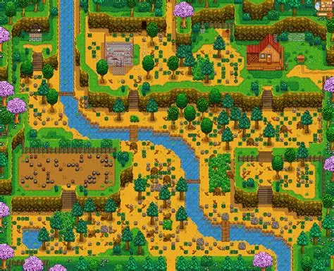
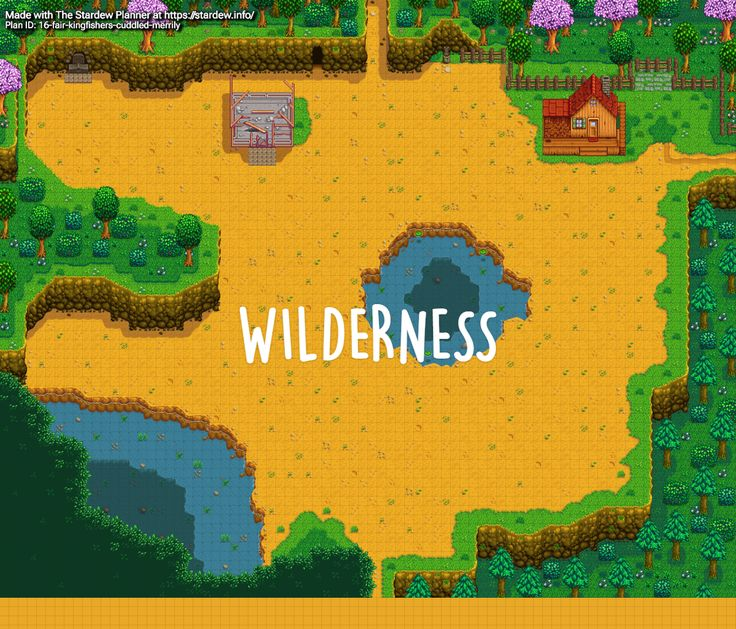
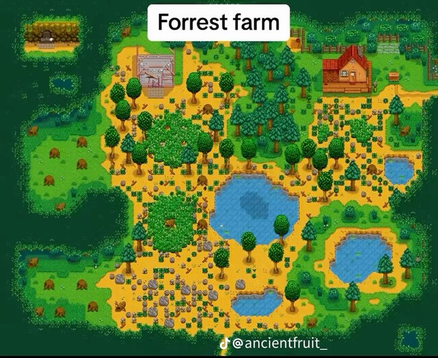
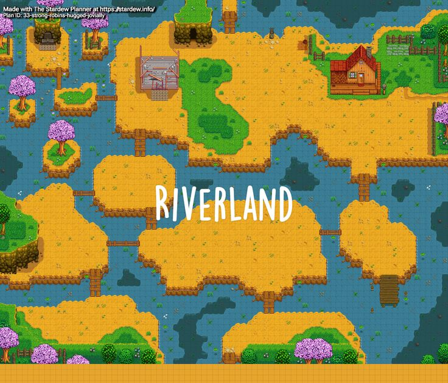
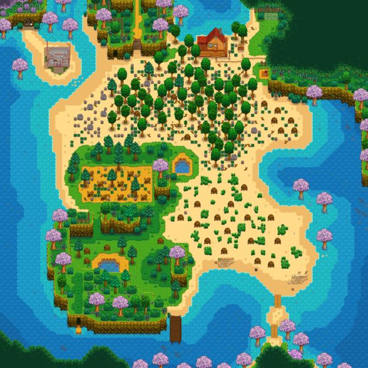
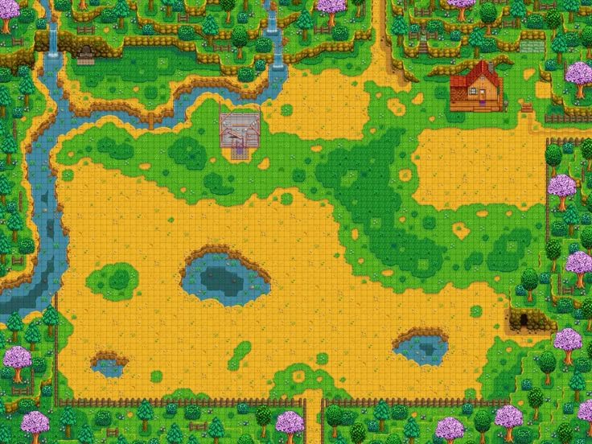
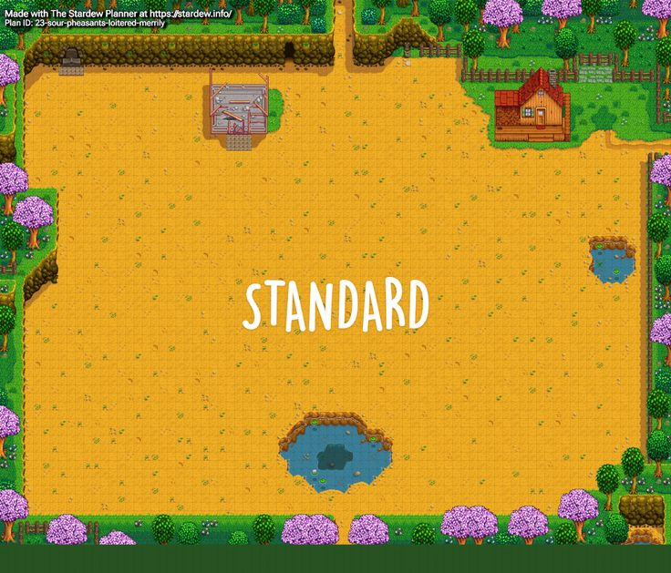
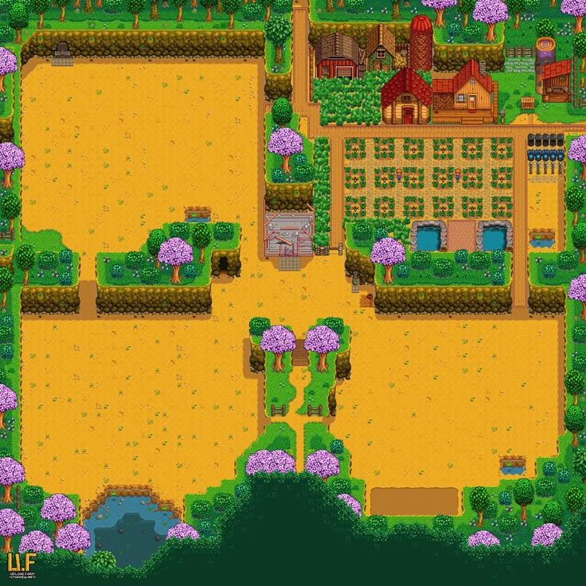

Here's This Video On Hidden Secrets!
Credits: Tiktok Christopherloft account here
Hilltop Farm
The Hilltop Farm consists of a mini-quarry. It can help with mining. The amount of tillable tiles is 1,648 and for fishing you can catch forest river fish or trash; it's 50/50. Even though this farm has a quarry the rocks and ore don't spawn fast. By the time you see gold or iridium there's a high chance you already found it in the mines and have plenty.
Wilderness Farm
This farm type has monsters spawn at night. The skill it helps is combat. The amount of tillable tiles is 2,131 and for fishing you can catch lake fish or trash; its 35%/65%. This farm is helpful it you want to level up your combat skills or increase your numbers for the Adventurer's Guild without going to the mines. But the lake in the middle of the farm and the large cliff to the side limits the space you have to work with.
Forest Farm
This farm is good for harvesting hardwood and seasonal items. The skill it helps is foraging. The amount of tillable tiles is 1,413 and for fishing you can catch lake fish at 35%, the 65% is trash, and 5% of catching Woodskip. If you care more about keeping crops then this map can be slightly limiting.
Riverland Farm
Riverland farm is great for leveling up fishing. This farm is made up of a series of islands. The amount of tillable tiles is 1,578. For fishing players have a 70% odds of catching town river fish and 30% odds forest river fish. Since time is limited in Stardew Valley having to run over all those bridges to different areas can take up a lot of the time. If you only want fish to finish the Community Center or prefer to fish in other locations, this map may not be the right one.
Beach Farm
This farm is mostly made of sand where you can use sprinklers. The skills it helps is foraging and farming. The amount of tillable tiles is 2,700. Fishing you is a 52.73% for ocean fish and the rest is trash, seaweed, oyster, coral, mussel, or cockle. This map isn't for beginners or who wants and easy ride. Crops will grow but sprinkles will not work so you would have to manually water your crops. You can use the large open areas for buildings and room for animals to graze. Also, supply crates will wash up on the beach with helpful items.
Meadowlands Farm
This farm is great for farming but more specifically raising animals. It comes with two chickens by default and has chewy blue grass that animals love. When fishing on this map the player will have 40% of fish from the Cindersap Forest pong and 60% catching trash. The amount of tillable tiles is 2,006 but has about 2,141 non-tillable tiles for buildings.
Standard Farm
Standard farm has the most available space. The skill it helps is farming with a total of 3,427 of tillable tiles. Fishing is not suitable for this map with a 100% of catching trash. This map has no special characteristics, which means you're not limited with where you place anything. This map is good if you're new to the game and it's also great for someone who likes clean lines and a nice blank square to work with.
Four Corners
This map is good for multiplayer because it's divided into four quadrants by hills with each quadrant having its own niche. It helps the farming, mining, fishing, and foraging skills. With 2,952 tillable tiles. Fishing has a 50/50 with catching forest pond fish and trash. The other areas are connected by pathways that can be cleared with upgraded tools and a crossroad in the center. It's also excellent if you want to organize your farm without having to think about where things go. There's also a little of every other farm in each corner.